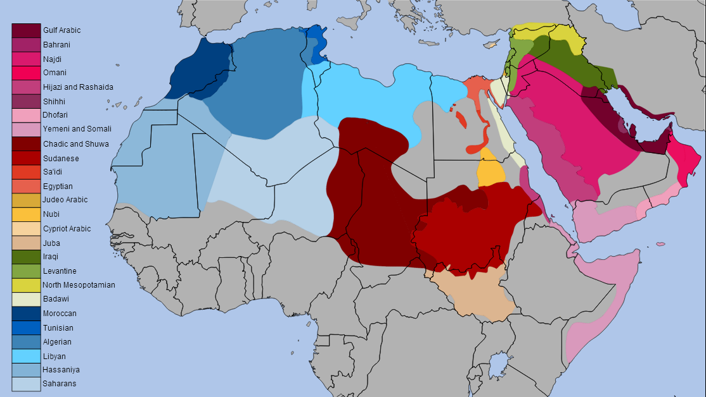
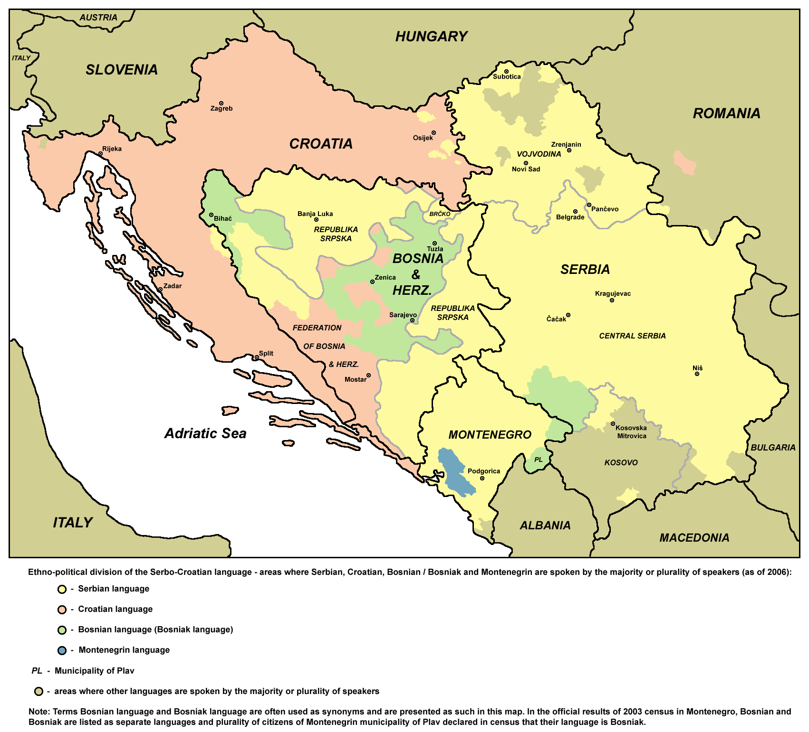
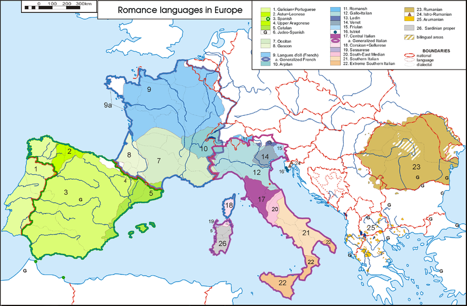
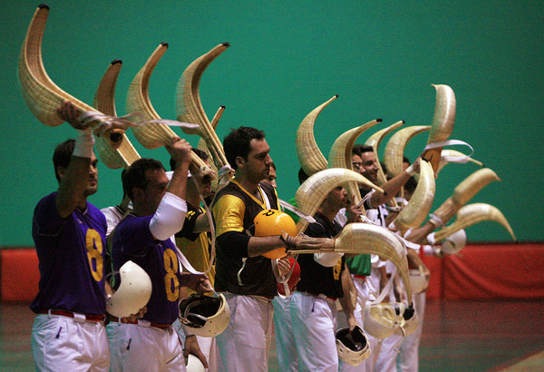

# #crappypuns A polar bear walks into a bar and says to the bartender "I'll have a rum ...................... and coke." The bartender asks, "What's with the big pause?" The bear responds "I was born with them." --- <correct>Music: Oskorri - Euskal Herrian Euskaraz </correct> <br> <correct>Language: Basque</correct> --- # Languages and Language Families! ### LING 1020 - Will Styler --- ### The Big Questions * What's the difference between and language and a dialect? * How do new languages develop? * How can languages be related? * How can we tell if they are? * Does geography have anything to do with it? --- ## How can we tell if people are speaking two dialects of the same language, or two different languages? * Discuss with your neighbor for a minute --- ### This one's kind of tough! --- ## "Speakers understand each other!" --- ### Mutual Intelligibility When two people can understand each other when talking. --- ### Mutual Intelligibility! * English speakers understand English speakers * Russian speakers understand Russian speakers * Russian speakers *don't* understand English speakers --- ### This sounds promising! --- ### Dialect Continuum A geographical continuum of speakers where nearby speakers understand each other, but distant speakers might not. ---  <small>[Image Credit](http://mapsontheweb.zoom-maps.com/image/59579538144)</small> --- ### Mutual Intelligibility * Moroccan Arabic speakers don't understand Egyptian Arabic speakers * (Unless they write the message down) * Ukrainian speakers understand Russian speakers (and vice versa) * Swedish, Danish and Norwegian speakers all understand each other * Brazilian Portuguese speakers understand Spanish better than the other way around * ("Asymmetrical Mutual Intelligiblity") * AAVE speakers understand rural New Zealand speakers * (??) --- <img class="big" src="humorimg/dudewaitwhat.jpg"> --- # OK, so what else? --- ## "They use the same writing system!" --- ### Shared Writing Systems * Literate English speakers use the same writing system! * (... the same one as Tagalog, Romanian, Vietnamese) * Russian and Mongolian both use Cyrillic * Moroccan and Yemeni Arabic have a writing system in common, but little else. --- <img class="big" src="humorimg/surprisedkoala.jpg"> --- ## "Speakers agree they're speaking the same language!" --- <lang>Serbo-Croatian</lang><br><ldata>IE:SW-Slavic - The Balkans</ldata> <img src="img/bcsflags.png"> --- <lang>Serbo-Croatian</lang><br><ldata>IE:SW-Slavic - The Balkans</ldata> * Also known as "Serbo-Croat" or "BCS" * Spoken in Bosnia & Herzegovina, Serbia, Croatia, and Montenegro * Up until the 1990s, there were four dialects, one for Bosnia, Serbia, Croatia, and Montenegro * Yugoslavia broke apart, wars started, people were massacred * Now they’re four different languages spoken by four different peoples in four different countries ---  --- ## My head hurts --- ### So we have... * Different Dialects which could be languages, but are dialects * (Moroccan and Egyptian Arabic) * Languages which could be dialects, but are languages * (BCS, or Hindi and Urdu) * Different Languages where speakers understand each other * (Swedish, Norwegian, and Danish) --- <img class="big" src="humorimg/relationshipcomplicated.png"> --- ** So what *really* makes a language different from a dialect?** --- ## *“A language is a dialect with an Army and a Navy”* <small> Popularized by Max Weinreich </small> --- **Calling something a language or a dialect is a political choice, not a linguistic one** * If you want to unite yourself with a group, they’re speaking a dialect of your language * If you want to distance yourself from a group, they’re speaking another language * *... but we still have to describe the linguistic relationship!* --- # This is why we talk about language families! --- ## Language Families are all about patterns --- <style type="text/css"> .tg {border-collapse:collapse;border-spacing:0;} .tg td{font-family:Arial, sans-serif;padding:10px 5px;border-style:solid;border-width:1px;overflow:hidden;word-break:normal;} .tg th{font-family:Arial, sans-serif;font-weight:normal;padding:10px 5px;border-style:solid;border-width:1px;overflow:hidden;word-break:normal;} .tg .tg-6eq8{color:#333333} .tg .tg-e3zv{font-weight:bold} .tg .tg-ak3j{font-weight:bold;color:#333333} </style> <table class="tg"> <tr> <th class="tg-e3zv">English</th> <th class="tg-e3zv">German</th> <th class="tg-e3zv">Dutch</th> <th class="tg-e3zv">Swedish</th> <th class="tg-ak3j">Turkish</th> </tr> <tr> <td class="tg-031e">Father</td> <td class="tg-031e">Vater</td> <td class="tg-031e">Vader</td> <td class="tg-031e">Far</td> <td class="tg-6eq8">Baba</td> </tr> <tr> <td class="tg-031e">Fish</td> <td class="tg-031e">Fisch</td> <td class="tg-031e">Vis</td> <td class="tg-031e">Fisk</td> <td class="tg-6eq8">Balik</td> </tr> <tr> <td class="tg-031e">Eat</td> <td class="tg-031e">Essen</td> <td class="tg-031e">Eten</td> <td class="tg-031e">äta</td> <td class="tg-6eq8">yemek</td> </tr> <tr> <td class="tg-031e">Have</td> <td class="tg-031e">Haben</td> <td class="tg-031e">Hebben</td> <td class="tg-031e">Ha</td> <td class="tg-6eq8">Var</td> </tr> </table> * <danger>Are some of these languages related? Talk to your neighbors!</danger> --- ### Mother Language The original language from which a set of other languages developed --- ### Sister Languages Languages which share a single mother --- <style type="text/css"> .tg {border-collapse:collapse;border-spacing:0;} .tg td{font-family:Arial, sans-serif;padding:10px 5px;border-style:solid;border-width:1px;overflow:hidden;word-break:normal;} .tg th{font-family:Arial, sans-serif;font-weight:normal;padding:10px 5px;border-style:solid;border-width:1px;overflow:hidden;word-break:normal;} .tg .tg-6eq8{color:#333333} .tg .tg-e3zv{font-weight:bold} .tg .tg-ak3j{font-weight:bold;color:#333333} </style> <table class="tg"> <tr> <th class="tg-e3zv">English</th> <th class="tg-e3zv">German</th> <th class="tg-e3zv">Dutch</th> <th class="tg-e3zv">Swedish</th> <th class="tg-ak3j">Turkish</th> </tr> <tr> <td class="tg-031e">Father</td> <td class="tg-031e">Vater</td> <td class="tg-031e">Vader</td> <td class="tg-031e">Far</td> <td class="tg-6eq8">Baba</td> </tr> <tr> <td class="tg-031e">Fish</td> <td class="tg-031e">Fisch</td> <td class="tg-031e">Vis</td> <td class="tg-031e">Fisk</td> <td class="tg-6eq8">Balik</td> </tr> <tr> <td class="tg-031e">Eat</td> <td class="tg-031e">Essen</td> <td class="tg-031e">Eten</td> <td class="tg-031e">äta</td> <td class="tg-6eq8">yemek</td> </tr> <tr> <td class="tg-031e">Have</td> <td class="tg-031e">Haben</td> <td class="tg-031e">Hebben</td> <td class="tg-031e">Ha</td> <td class="tg-6eq8">Var</td> </tr> </table> * **Sister Languages** - English, German, Dutch, Swedish * **Mother Language** - Proto-Germanic! --- # How can we figure out these relations? --- ## "Will, how are baby languages made?" --- ### Well, when speakers love a language very much... * Speakers of a language inhabit a wide area * Groups of speakers become geographically or culturally isolated * The languages changes naturally, but *differently for each group*! * Let a few hundred years pass, and bam, languages. --- ## Case in point: Latin! <img class="strech" src="humorimg/stabbedcaesar.jpg"> --- ### Step 1: Conquer vast Empire, make everybody speak Latin <img class="big" src="lotwimg/romanempire.jpg"> --- ### Step 2: Screw said Empire up <img class="big" src="lotwimg/romefall.jpg"> --- ### Step 3: Daughter Languages!  --- ### The Romance Languages The Daughters (and grand-daughters) of Latin <img width="100%" src="lotwimg/romancetree.png"> <!-- .element: class="fragment" --> --- ## What are the signs that languages are related? --- ### Geography Nearby people often speak related languages <danger>... but not always! </danger> <!-- .element: class="fragment" --> --- --- <lang>English</lang><br><ldata>IE:Germanic - Everywhere</ldata> <img class="big" src="samples/english.gif"> --- <lang>French</lang><br><ldata>IE:Italic - Also everywhere</ldata> <img class="big" src="samples/french.gif"> --- <lang>Breton</lang><br><ldata>IE:Celtic - Brittany</ldata> <img class="big" src="samples/breton.gif"> --- ### Actual human genetics! Researchers have used genetic studies to *support* hypotheses about linguistic and cultural connections --- ### Cognates Words which sound similar across different languages --- <style type="text/css"> .tg {border-collapse:collapse;border-spacing:0;} .tg td{font-family:Arial, sans-serif;padding:10px 5px;border-style:solid;border-width:1px;overflow:hidden;word-break:normal;} .tg th{font-family:Arial, sans-serif;font-weight:normal;padding:10px 5px;border-style:solid;border-width:1px;overflow:hidden;word-break:normal;} .tg .tg-gswb{color:#9b9b9b} .tg .tg-e3zv{font-weight:bold} .tg .tg-j3pi{font-weight:bold;color:#9b9b9b} </style> <table class="tg"> <tr> <th class="tg-e3zv">English</th> <th class="tg-e3zv">German</th> <th class="tg-e3zv">Dutch</th> <th class="tg-e3zv">Swedish</th> <th class="tg-j3pi">Turkish</th> </tr> <tr> <td class="tg-031e">Father</td> <td class="tg-031e">Vater</td> <td class="tg-031e">Vader</td> <td class="tg-031e">Far</td> <td class="tg-gswb">Baba</td> </tr> <tr> <td class="tg-031e">Fish</td> <td class="tg-031e">Fisch</td> <td class="tg-031e">Vis</td> <td class="tg-031e">Fisk</td> <td class="tg-gswb">Balik</td> </tr> <tr> <td class="tg-031e">Eat</td> <td class="tg-031e">Essen</td> <td class="tg-031e">Eten</td> <td class="tg-031e">äta</td> <td class="tg-gswb">yemek</td> </tr> <tr> <td class="tg-031e">Have</td> <td class="tg-031e">Haben</td> <td class="tg-031e">Hebben</td> <td class="tg-031e">Ha</td> <td class="tg-gswb">Var</td> </tr> </table> --- <style type="text/css"> .tg {border-collapse:collapse;border-spacing:0;} .tg td{font-family:Arial, sans-serif;padding:10px 5px;border-style:solid;border-width:1px;overflow:hidden;word-break:normal;} .tg th{font-family:Arial, sans-serif;font-weight:normal;padding:10px 5px;border-style:solid;border-width:1px;overflow:hidden;word-break:normal;} .tg .tg-c9cr{font-style:italic} .tg .tg-e3zv{font-weight:bold} </style> <table class="tg"> <tr> <th class="tg-e3zv">English</th> <th class="tg-e3zv">French</th> <th class="tg-e3zv">Italian</th> <th class="tg-e3zv">Spanish</th> <th class="tg-e3zv">Portuguese</th> </tr> <tr> <td class="tg-c9cr">zero</td> <td class="tg-031e">zéro</td> <td class="tg-031e">zero</td> <td class="tg-031e">cero</td> <td class="tg-031e">zero</td> </tr> <tr> <td class="tg-c9cr">one</td> <td class="tg-031e">un</td> <td class="tg-031e">uno</td> <td class="tg-031e">uno</td> <td class="tg-031e">um / uma</td> </tr> <tr> <td class="tg-c9cr">two</td> <td class="tg-031e">deux</td> <td class="tg-031e">due</td> <td class="tg-031e">dos</td> <td class="tg-031e">dois / duas</td> </tr> <tr> <td class="tg-c9cr">three</td> <td class="tg-031e">trois</td> <td class="tg-031e">tre</td> <td class="tg-031e">tres</td> <td class="tg-031e">três</td> </tr> <tr> <td class="tg-c9cr">four</td> <td class="tg-031e">quatre</td> <td class="tg-031e">quattro</td> <td class="tg-031e">cuatro</td> <td class="tg-031e">quatro</td> </tr> </table> --- ### Sound Correspondences Where one sound in one language systematically corresponds with another sound in another language --- <style type="text/css"> .tg {border-collapse:collapse;border-spacing:0;} .tg td{font-family:Arial, sans-serif;padding:10px 5px;border-style:solid;border-width:1px;overflow:hidden;word-break:normal;} .tg th{font-family:Arial, sans-serif;font-weight:normal;padding:10px 5px;border-style:solid;border-width:1px;overflow:hidden;word-break:normal;} .tg .tg-gswb{color:#9b9b9b} .tg .tg-e3zv{font-weight:bold} .tg .tg-j3pi{font-weight:bold;color:#9b9b9b} </style> <table class="tg"> <tr> <th class="tg-e3zv">English</th> <th class="tg-e3zv">German</th> <th class="tg-e3zv">Dutch</th> <th class="tg-e3zv">Swedish</th> <th class="tg-j3pi">Turkish</th> </tr> <tr> <td class="tg-031e">Father</td> <td class="tg-031e">Vater</td> <td class="tg-031e">Vader</td> <td class="tg-031e">Far</td> <td class="tg-gswb">Baba</td> </tr> <tr> <td class="tg-031e">Fish</td> <td class="tg-031e">Fisch</td> <td class="tg-031e">Vis</td> <td class="tg-031e">Fisk</td> <td class="tg-gswb">Balik</td> </tr> <tr> <td class="tg-031e">Have</td> <td class="tg-031e">Haben</td> <td class="tg-031e">Hebben</td> <td class="tg-031e">Ha</td> <td class="tg-gswb">Var</td> </tr> </table> * **/f/ and /v/** * **/v/ and /b/** --- ### Sound correspondences * We look for common *patterns* of correspondence * Sounds will change based on how they're produced * /d, n, l/ will often change around * (as in the Dakota, Lakota, and Nakota languages) * Systematic sound correspondence with cognates is a slam-dunk case for language relation --- ### Shared linguistic features If a bunch of languages do things in a certain way, they may be related. * Five languages nearby with a Vocative case? Prolly related. * 8 languages with tone, surrounded by languages without tone? It's a solid bet. --- If you have a few of these things, shared among some languages, you may have a... --- ### Language Family A group of languages which share a common ancestor --- <img class="big" src="lotwimg/indoeuropean.gif"> --- ## How do we find deeper language ancestry? --- ### Finding language ancestry * 1) Find related languages * 2) Reconstruct the mother tongue! --- ### Language Reconstruction The process of looking at daughter languages and guessing what structures, sounds, and words the mother language must have had. * An art, not a science --- ### We do this all the time! <img class="big" src="img/weasleys.jpg"> <!-- .element: class="fragment" --> --- ### Reconstructing words * 1) Find cognates * 2) Reverse sound changes * 3) Note borrowings * 4) When all else fails, go with the most common form in the daughters --- ### Reconstructing grammar * 1) Look at the grammatical patterns and structures present * 2) Find the ones that are shared among the languages * 3) Pick a shared pattern or structure * 4) For those that lack (or have) the pattern or structure, try and explain why * (Maybe influence from another language, or a conflicting pattern) * 5) Assume that structures present in a majority of daughters were also present in the mother --- <lang>Proto-Indo-European</lang><br><ldata>Indo-European - ???</ldata> * *wem-, *h₁reug- - 'to vomit' * *wāt-, *weh₁- - 'to blow' * *pneu- - 'to breathe' * *(s)mei- - 'to laugh' * *ǵhasto-, *ǵhazdho- - 'stick' * (According to Watkins 2000) --- ### What's the Catch? <danger>***Reconstruction assumes regularity!***</danger> --- ### Reconstruction will fail if... * Sounds changed unpredictably * "Ooh, I like /ɠ/, let's use that!" * Change happened for non-predictable reasons * "We got rid of that verb form because it sounds too much like "Michael Bay", and did you see what he did to the Transformers franchise?" * Coincidence * If more languages got rid of an earlier structure than kept it, we may pretend it's a new thing * *... and we may never know if it's failed!* --- ### ... but it's still our best chance! * So, when we're looking into relations between languages... --- ### Finding language ancestry * 1) Find related languages * 2) Reconstruct the mother tongue! * 3) Then, compare that to other mother languages. * 4) Then, the mothers' mothers... * 5) If they have words, features, or structures in common, you've got a family! --- <section data-background="img/clickerbkgrnd.png"></section> ### Which of the following information **does not** help us to find language relations? A) Geography B) Sound correspondences C) Shared Writing Systems D) Cognate words E) DNA and Genetic Testing --- <section data-background="img/clickerbkgrnd.png"></section> ### Which of the following information **does not** help us to find language relations? A) Geography B) Sound correspondences <correct>C) Shared Writing Systems</correct> D) Cognate words E) DNA and Genetic Testing --- # Do all languages have relatives? --- ## Yes, but we don't always know what they are! --- ### Linguistic Isolates Languages where we have found no contemporary relatives or ancestors --- ### Basque <img class="big" src="lotwimg/basqueregion.jpg"> --- ### Basque <img class="big" src="lotwimg/basqueculture.jpg"> --- ### Basque  --- ### Other well-known(ish) isolates * Ainu (spoken in Japan) * Karok (spoken in California) * Korean (spoken in Korea) * Natchez (spoken in MS/LA, now OK) * Zuni (spoken in New Mexico) --- # ... but aren't all languages related? --- ### "Proto Human"/"Proto World" The postulated human mother-tongue * *This assumes language only developed once!* --- ### Proto-World is mostly the domain of crackpots <img class="big" src="humorimg/crackpot.jpg"> --- # Wrapping up --- ### Key points * 'Language' vs. 'Dialect' is political, not linguistic * Dialects of a 'mother language' which grow apart become 'daughter languages' * This begets 'language families' * We find these relations by looking for cognates, sound correspondences, shared features, and by doing reconstruction * We can't always find relatives for languages. --- ## Recitation You'll find relations in some languages, and take a demo quiz! --- ## Next time <danger>Class is cancelled Monday!</danger> --- ## Wednesday How to pronounce some of these crazy Non-English words! * <correct>No assigned reading</correct> --- ## See you all Wednesday! --- <huge>Thank you!</huge> http://savethevowels.org/world/slides/lotw_2.html